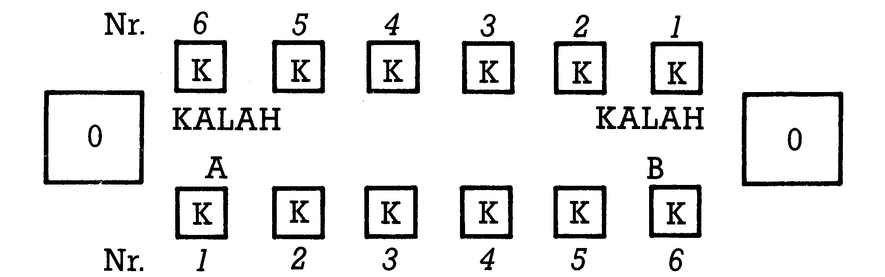
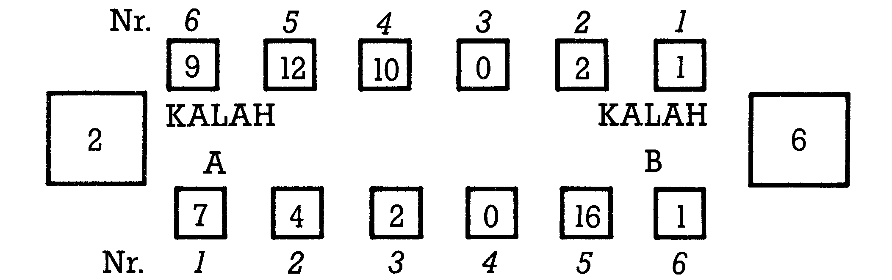
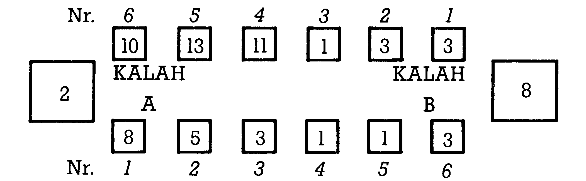
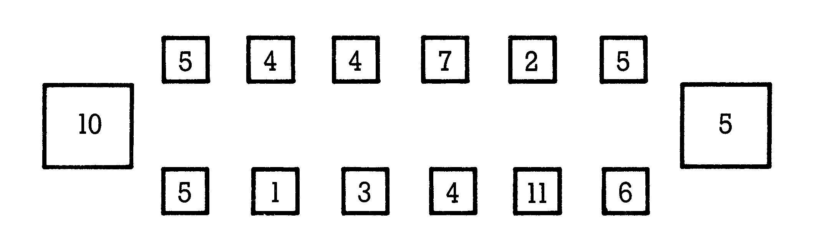
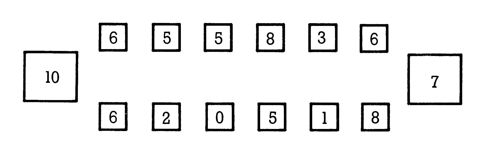
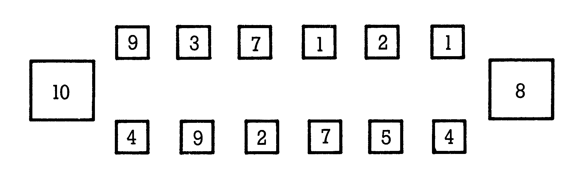
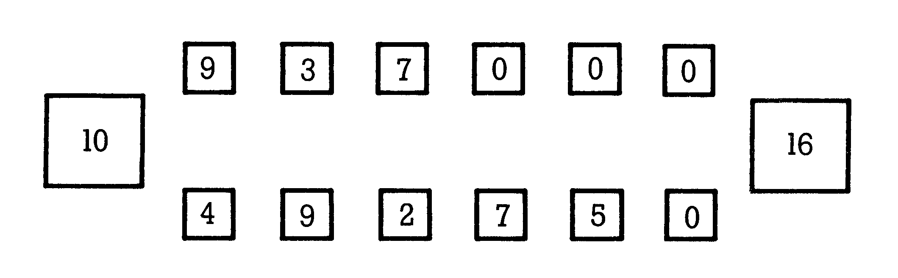
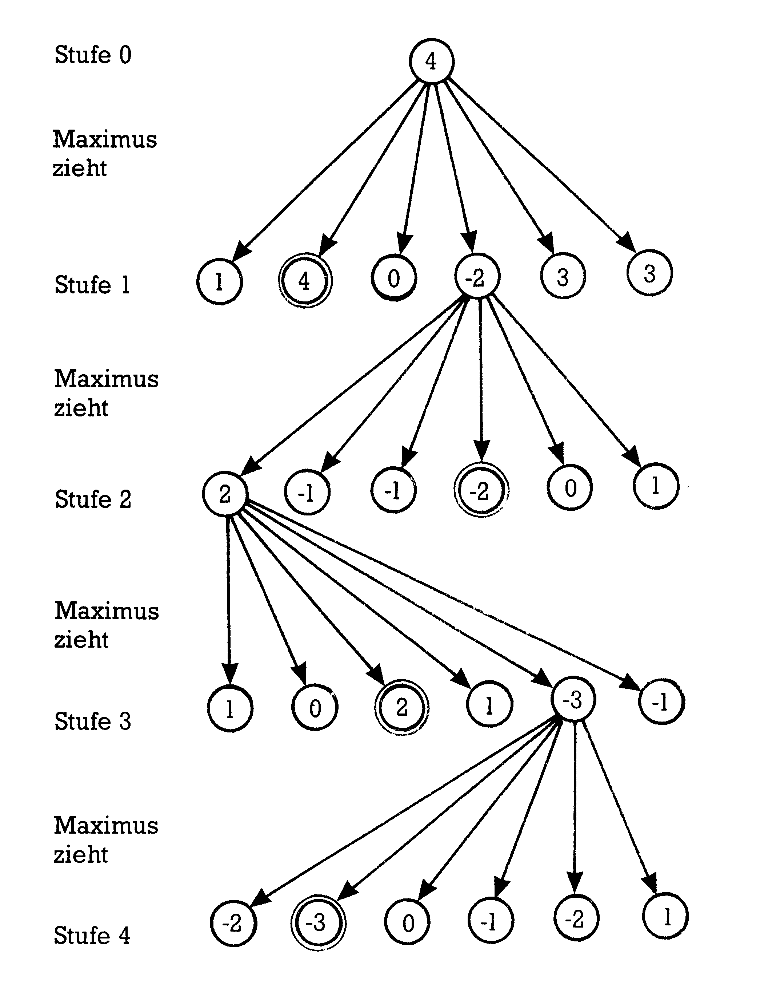

Computer-Knobeleien
Haben Sie Lust, verschiedene mathematische Rätsel und Knobeleien zu lösen? Steigen Sie ein und versuchen Sie, den Computer auszutricksen.
Zahllose Generationen haben im Mathematikunterricht gelitten. Die Meinung, Mathematik sei eine trockene, graue Wissenschaft ist erstaunlich weit verbreitet. Ab dieser Ausgabe starten wir deshalb einen Mitmach-Kurs. Wir wollen beweisen, daß gerade die spielerische Beschäftigung und das Experimentieren mit einigen Sondergebieten der Mathematik eine starke Faszination ausüben kann. Wichtigstes Handwerkszeug soll dabei natürlich unser Computer sein.
Wir werden regelmäßig an dieser Stelle ausgesuchte mathematische Rätsel, Knobeleien und Probleme vorstellen. Ihre Aufgabe soll es dann sein, Lösungsmöglichkeiten oder auch Varianten in und mit einem entsprechenden Programm vom C 64 oder C 128 bearbeiten zu lassen. Welche Sprache Sie dazu verwenden und wie Sie das Problem lösen, wollen wir allein Ihnen überlassen. Die besten Programme und Lösungswege werden wir dann in späteren Ausgaben veröffentlichen. Ebenso willkommen sind uns Themenvorschläge und Anregungen für weitere Folgen. Mitmachen bei diesem Wettbewerb kann mit etwas Fantasie und Programmiergeschick jeder. Die Themenfülle ist schier unerschöpflich und wir spekulieren bei diesem Kurs auf den »Homo Ludens« in jedem echten Computer-Freak sowie auf rege Beteiligung. Machen Sie mit!
Eine Strategie für Mancala
Die erste Folge soll uns nun zu einem Zwei-Personen-Spiel führen, das in Afrika bereits seit Jahrhunderten gespielt wird. Mancala, auch bekannt unter dem Namen Wari oder Kalah, ist in idealer Weise für Computer-Strategien geeignet: Der Aufwand ist gering, die Regeln sind einfach und günstige Spielsituationen lassen sich mit viel Rechnerei weit im Voraus bestimmen. Das Ziel des Spiels: Beide Spieler trachten danach, möglichst viele Steine in Ihrem »Kalah« (Hauptfeld) zusammenzuraffen. Steine, die sich erst einmal im Kalah befinden, bleiben dort.
Im Gegensatz zu Schachprogrammen, die auf Heimcomputern bestenfalls mittelmäßige Partien liefern, spielen Computer Mancala mit der hier vorgeschlagenen Strategie oft besser als der Mensch.
Spielregeln
Das Spielbrett für Mancala zeigt Bild 1.

Die afrikanischen Urheber spielten normalerweise mit k=6 Steinen. Sie können für k aber auch andere Werte einsetzen. Bei Spielbeginn werden die zwölf kleinen Felder mit je k Steinen besetzt. Die beiden großen Felder, die »Kalahs«, bleiben leer. Spielt man Mancala das erste Mal, so ist es empfehlenswert, weniger Steine zu benutzen. Für k < = 3 Steine je Feld sind sogar Strategien bekannt, die garantiert zum Sieg führen.
Jedem Spieler gehören die sechs zusammenhängenden Felder an der langen Seite des Bretts (Nr. 1 bis 6) und jeweils das Rechts vom Spieler liegende Kalah. Die Spieler ziehen abwechselnd. Dabei werden aus einem Feld, der Quelle, alle Steine herausgenommen und gegen den Uhrzeigersinn einzeln rundherum verteilt. Das bedeutet, daß jedes Feld, das links von der Quelle liegt, mit je einem weiteren Stein aufgefüllt wird, solange der Vorrat der Quelle ausreicht. Nur das Kalah des Gegners wird beim Verteilen übersprungen. Es ist natürlich auch möglich, daß der Spielkreis öfter als einmal überstrichen wird, sofern sich eine ausreichende Anzahl in der Quelle befindet. Einige Felder, einschließlich der Quelle, können so mehr als einen neuen Stein erhalten. Die Bilder 2a und 2b zeigen diesen Fall.


Neben diesem Grundzug bestehen zwei weitere Möglichkeiten. Fällt der letzte Stein in ein besetztes Feld des ziehenden Spielers und wurden auf der gegnerischen Seite ebenfalls Steine abgelegt, so wird dieses letzte Feld zur neuen Quelle. Mit diesen Steinen wird wieder verfahren wie beim Grundzug. Einen solchen Zug nenne ich im folgenden »chain« (engl. Kette).
Das klingt zunächst etwas kompliziert, wenn Sie aber die Bilder 3a und 3b betrachten, werden die Zusammenhänge schon klarer.


Mit dieser Möglichkeit läßt sich eine beliebig lange Verkettung von Zügen erreichen. Dem ziehenden Spieler bietet das den Vorteil, daß bei jedem Umlauf das eigene Kalah um einen Stein wächst.
Bei der zweiten Variante fällt der letzte Stein in ein gegnerisches Feld. Zählt dieses Feld danach zwei oder drei Steine, werden alle Steine des betroffenen Feldes gekapert und in das eigene Kalah umgeladen. Befinden sich vor einem gekaperten Feld ebenfalls zwei oder drei Spielsteine, so werden diese auf die gleiche Art geladen. Es ist so durchaus möglich, daß alle sechs gegnerischen Felder auf einen Schlag geleert werden. Hierzu müßten zunächst diese Felder mit einem oder zwei Steinen besetzt sein. Fällt bei der Verteilung dann der letzte Stein auf Feld 6 des Gegners, so geht es ihm »an den Kragen«. In den Bildern 4a und 4b werden mit der Methode »capture« (engl. kapern) drei Felder abkassiert.


Mancala ist beendet, sobald einer der Spieler mehr als die Hälfte der Steine in sein Kalah getrickst hat. Ebenfalls entschieden ist das Spiel, wenn alle Felder des ziehenden Spielers leer sind. In diesem Fall wandern alle gegnerischen Steine in dessen Kalah und werden bei der Endauszählung mitbewertet.
Programmieren statt probieren
Die programmgesteuerte Überprüfung der erlaubten Züge ist denkbar einfach. Sofern kein Feld leer ist, stehen sechs Züge zur Auswahl. Ebenso lassen sich »chains« und »captures« leicht feststellen. Am Ende eines Zuges muß schließlich noch geklärt werden, ob das Kalah des ziehenden Spielers mehr als die Hälfte aller Steine enthält. »Ist doch sonnenklar«, werden Sie jetzt vielleicht denken. Doch wie hat eine Strategie für unseren Commodore auszusehen, mit welchem Zug wird aus einer vorgegebenen Position am erfolgreichsten »abgesahnt«? Nun, die Grundidee besteht in der Aufstellung eines Baumes, der alle Zugmöglichkeiten berücksichtigt. Dabei muß die Verzweigung mit dem günstigsten Endergebnis gefunden und der Zug in die entsprechende Richtung ausgeführt werden. Diese Strategie wird bei fast allen Zwei-Personen-Spielen angewandt. In dieser Folge werde ich auf die Grundlagen der Bäume und gerichteter Graphen nicht näher eingehen.
Um die Darstellung zu vereinfachen, ersetzt im folgenden der Computer den Spieler B und hört auf den Namen Maximus, sein menschlicher Gegner auf Minimus. Diese Bezeichnungen sind keine moralische Entgleisung, sondern für uns, wie sich später noch herausstellen wird, sehr zweckmäßig. Wir befinden uns irgendwo in der Mitte des Spiels, mit Maximus am Zug. Um einen vollständigen Baum zu erstellen, müßte B zunächst seine eigenen sechs Züge auswerten, anschließend die 36 Gegenzüge berechnen und so weiter. Sie sehen wahrscheinlich schon, wohin das führt: Für jede weitere Stufe der Analyse braucht unser Computer die sechsfache Rechenzeit. Schon der Gedanke an Basic wirkt dabei wie eine Schlaftablette.
Computertaktik
»Minimaximierung« ist das Zauberwort unserer Strategie. Betrachten wir zunächst Bild 5.

Maximus ist am Zug (Stufe 0). Er hat sechs Züge (Pfeile) zur Auswahl (Stufe 1) und analysiert mit einer Tiefe von t = 4 Stufen. Die Pfeile werden oft auch als »Kanten«, die Kreise als »Knoten« bezeichnet. Aus Platzgründen ist es sinnvoll, nur einen der möglichen Pfade darzustellen. Die Anzahl der zu berechnenden Positionen steigt exponentiell mit der Tiefe t nach der Formel:
\[ \sum_{i=1}^{t} 6^i = 6^1 + 6^2 + \ldots + 6^{t-1} + 6^t \]
Für t = 4 muß der Computer also maximal 1554 Positionen berechnen. Natürlich ist diese Zahl fast immer niedriger, weil eines oder mehrere Felder auf der Seite des ziehenden Spielers leer sind, oder weil ein Spieler mit seinem Zug die Partie beendet.
Für alle Positionen muß ein Punktestand als Differenz der beiden Kalahs errechnet und gespeichert werden (wir vereinbaren, daß bei einem positiven Punktestand Maximus die Nase vorn hat). Sind alle derartigen Zuordnungen abgeschlossen, beginnt die Minimaximierung. Die Zahlen in den Kreisen in Bild 5 veranschaulichen dieses Verfahren: Aus allen jeweils zusammengehörenden sechs Punkteständen der Stufe t=4 werden die Minima errechnet und in die Knoten darüber (Stufe 3) eingetragen. Dementsprechend werden in Stufe 3 die Maxima gebildet und in die Knoten der Stufe 2 übertragen. Schließlich steht in dem Knoten der Stufe 0 der Vorsprung (bei negativen Zahlen der Rückstand), den Maximus gegenüber seinem Gegner erlangt, wenn er den günstigsten Zug auswählt. In unserem Fall würde Maximus von Feld 2 ziehen. Man beachte, daß immer für gerade Stufennummern i maximiert und für ungerade i minimiert wird. Dieses rekursive Verfahren geht davon aus, daß beide Spieler immer die für sie besten Züge ausführen.
Variationen
Wenn Sie eine gute Strategie programmiert haben, sollten Sie Ihrem Programm auch die Fähigkeit verleihen, gegen sich selbst zu spielen. Die Anzahl k der Steine bei Spielbeginn sollte ebenso einstellbar sein wie die Analysetiefe t und der Spieler mit dem ersten Zug. Auch müßte das Programm in der Lage sein, zwischen gleichguten Zügen per Zufall auszuwählen.
Natürlich ist Mancala ebenso in idealer Weise für die Erweiterung der Regeln geeignet: Kreieren Sie Triancala für drei Personen oder erhöhen Sie die Anzahl der Felder!
Lange Programmiernächte bis zur nächsten Folge wünscht Ihnen
(Matthias Rosin/dm)